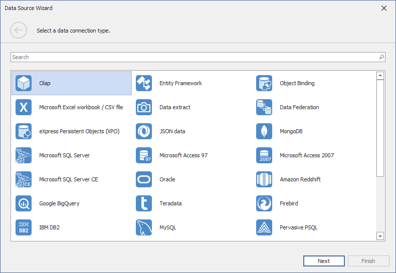

Connecting to OLAP cubes
The Dashboard Designer provides the capability to connect to an OLAP cube in the Microsoft Analysis Services database using the Data Source wizard.
To connect to an OLAP cube in the Dashboard Designer, do the following steps.
Click the New Data Source button in the Data Source ribbon tab.

On the first page of the invoked Data Source Wizard dialog, select Olap and click Next.

- On the next page, choose the required Connection type. The following types are available.
Server
If you selected Server, the following options are available.

Server name
Specify the name of the OLAP server to which the connection should be established.
UserId
Specify the user name used to authenticate to the OLAP server.
Password
Specify the password used to authenticate to the OLAP server.
Catalog
Select a data catalog that contains cubes.
Cube Name
Select a cube that provides OLAP data.
Click Finish to create a data source.
Local Cube File
If you selected Local cube file, specify the path to the requiredOLAP cube. To locate the cube, click the ellipsis button next to the Database field.

Click Finish to create a data source.
Custom Connection String
If you selected Custom connection string, specify a connection string in the Custom connection string editor.

Click Finish to create a data source.